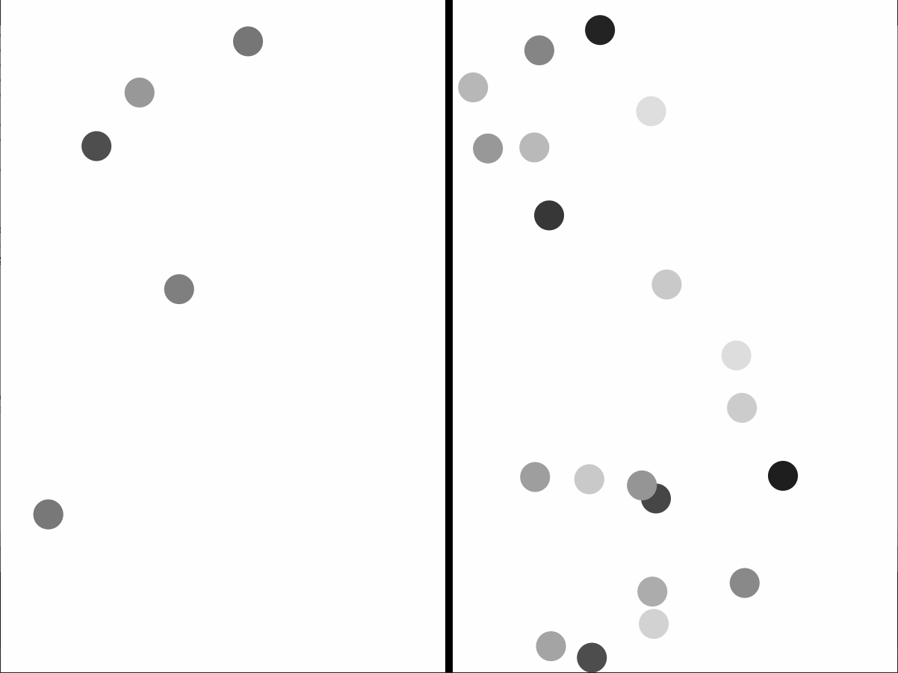
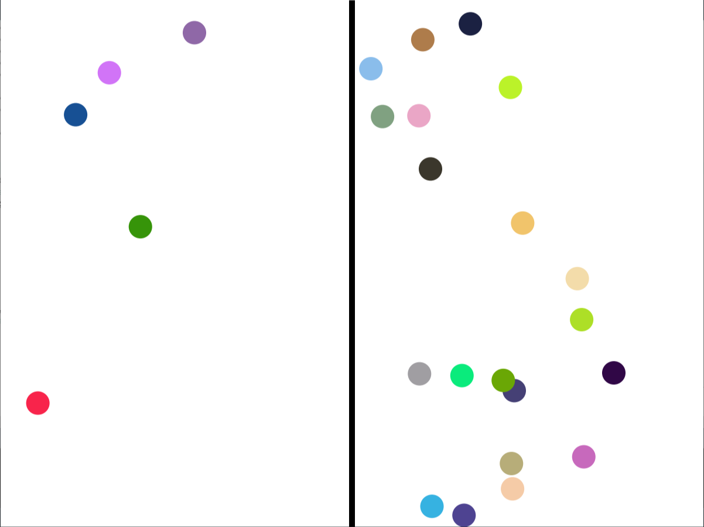

Mathematical Modeling


In my second semester at MIT, I am taking a class called "The Nature of Mathematical Modeling" taught by Neil Gershenfeld. So far, I have been getting familiar with the mathematical capabilities of a variety of programming languages, including Processing, Javascript, and Python. We have modeled Maxwell's Demon so far, and will continue to model various theoretical and real-life systems. My work for the class can be found here.